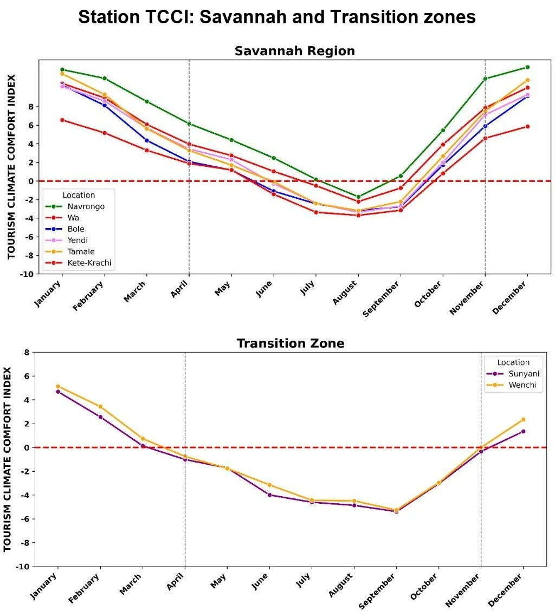
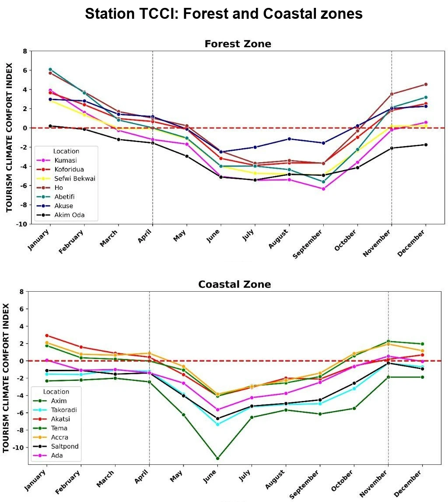
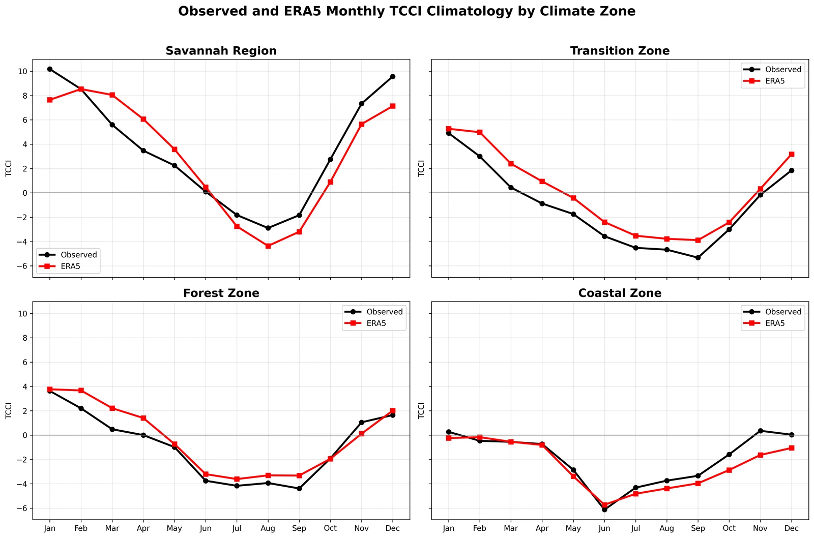
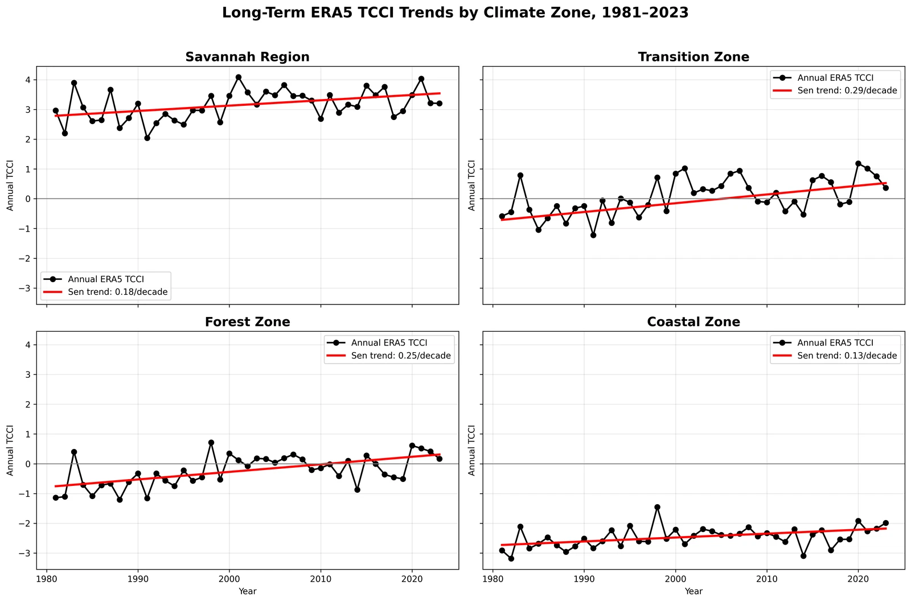

Reading Ghana’s tourism-climate seasons
Station-based seasonality, ERA5 evaluation, long-term trends, and the relationship between climate suitability and visitor arrivals.
- Record
- 1981–2023
- Stations
- 22
- Zones
- 4
- Evaluation
- ERA5
The question
When is the climate more favorable for tourism—and how much does it explain visitation?
The revised study examines tourism-climate suitability using 43 years of observations from 22 Ghanaian stations, independent evaluation with ERA5, and national tourism-arrival context.
Data & methods
A closer look at
the approach.
A standardized Tourism Climate Comfort Index combines temperature, temperature amplitude, sunshine, humidity, and rainfall. Station climatology is evaluated against ERA5; Sen slopes and Mann–Kendall tests describe annual trends. Monthly international arrivals for 2019 and 2021–2024 provide a separate demand comparison.
Findings & context
What the work shows.
- Station-mean TCCI is positive in January–April and November–December, and negative in May–October.
- ERA5 reproduces the zonal seasonal cycle well, with correlations of 0.93–0.99 across 12 monthly zone means.
- The full monthly association with tourism arrivals is weak and not statistically significant. Climate suitability is one part of tourism demand, alongside holidays, events, and other factors.
Collaborative manuscript in preparation. TCCI is a relative climate-resource indicator, not a direct measure of physiological comfort or tourism demand.
From the analysis
Research figures.
Select a figure to view it larger.
{kind=link}

{kind=link}

{kind=link}

{kind=link}
